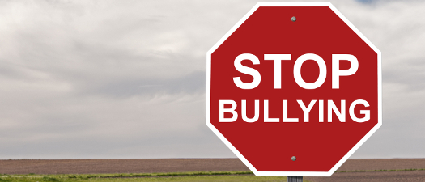
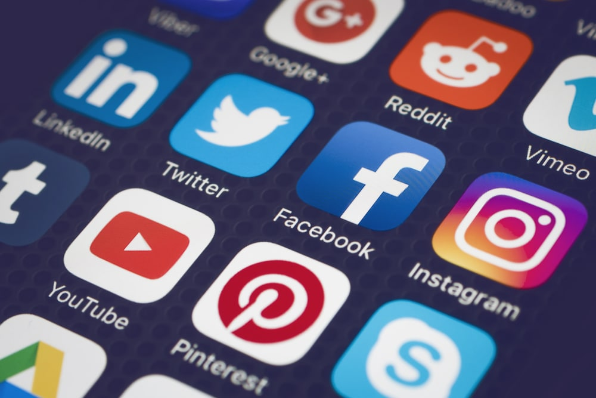

Prevention and Awareness
Here are some of the things and safety measures we can do to prevent the spread of cyberbullying.
Think before posting
We must think our actions through before doing something. We must think about what the effects would be and what would happen if we take a particular action. We must ask ourselves if hitting that "post" or "share" button would harm and hurt someone. Let us take a moment to reflect, assess, and discern before taking action. We have to ensure that our actions would be appropriate and for good. Thinking it through protects others and even ourselves. We have to determine if the things we are about to post are things we would want to share online. People may use posts against someone, so it is essential to be cautious in what we post. Taking time to think helps us do the right thing and avoid trouble, mistakes, and regrets later on. It also helps make the internet a safer place for everyone.
Protect devices and social media accounts
We can adjust the privacy and security settings on our accounts for extra protection. We can set accounts to private, use two-factor authentication, limit comments and tagging, require permission to follow, and restrict access to personal information. Nowadays, social media platforms have more options and features to continue staying safe online.
Educate yourself and others
In a world of problems and social issues, educating others and oneself is important. We must learn more about different issues so that we would be aware of them and have a better understanding of them. Educating others (and ourselves) about cyberbullying helps them understand what counts as cyberbullying and what the effects are. It helps identify signs of cyberbullying and prevent the further damage it can do later on. That way, we can help and protect others by reporting it. We can talk and discuss these things with our family and friends to help spread awareness.
Refrain from replying to cyberbullies
We should not respond to cyberbullies nor engage with them any further. Cyberbullies usually aim to trigger people and look forward to their response. They would not get anything if we choose not to reply to them. What we should do instead is to document the bullying and inform trusted people about it.
Report incidents of cyberbullying
If we or someone we know experiences cyberbullying, we should not hesitate to report it or call the bullies out. We must let someone know about the incident and any additional information we may have. We can take screenshots of the bullying and save the evidence. We must inform the social media platform and trusted people, such as our parents, teachers, counselor, and the school. We should document the event and block the cyberbully. If we become witnesses of cyberbullying, and even other forms of harassment, we should do something about it and not be a bystander. Let us stand up for the victims by helping them and giving them the support they need.
Safeguard your passwords
We should protect our passwords and not share them with anyone, even with our friends and other people we trust. It is essential that we use strong passwords and that we have different passwords for different accounts. We must have password lengths of at least 12 characters and above and a combination of letters, numbers, and symbols. Another thing is that we should not save all our passwords in form fields and websites. It may be convenient, but it is better to be safe than sorry. It is good that we learn about password safety to protect our accounts and devices.
Log out of your accounts
We must log out of any account after browsing, especially if we are using public or shared devices at schools and libraries. Others may have access and get into someone else's account if the latter forgets to log out. People can change the password, gain control of the account, access personal information, and pose as someone else, all of which can cause problems.
Do not share personal and sensitive information online
We should not share information like phone numbers, home addresses, and passwords on the internet. If it is needed to share them (in instances such as online shopping, online payment, and signing up for trusted platforms), we should be cautious. We must keep personal information private and not share too much, especially with people we do not know well.
Do not reply to messages or requests from unknown people
We should never open or reply to messages from strangers nor accept their friend requests. We should not reply to threatening or unpleasant texts or messages from people we do not know. We can ignore them or tell someone about it. Sometimes, messages contain viruses if opened, and they could harm our accounts and devices. Other messages can contain links that lead to web pages with viruses. They are often designed to steal personal information if we click on them.
Be careful when interacting with others online

In online interactions, we may never truly know someone and their intentions. It is why we must be cautious in talking to people on the internet. Making internet friends is all right, but we must still be careful. We should not share everything about ourselves, as they can use that information to target us. It is good to take note right away if we feel something is wrong or different in our conversations with others.

Learn about netiquette and respect
In a digital age, respect is the most important thing to have. Online manners matter, and we should be kind and appropriate at all times. We must respect others' time and privacy and keep ethics in mind. Words matter and carry weight, and it is always good to pause for a moment before posting. Let us be aware of where we are online and continue to have a respectful approach towards everyone. On the internet, we should act like how we would act in real life and stick to the same moral standards. Instead of being part of the problem, we should be part of preventing the spread of it. We must recognize the importance of respecting everyone.
Why do people cyberbully?
There are various reasons why people choose to cyberbully and hurt others, and these can include:
- Revenge due to pain and trauma
- Bullying helps them feel powerful
- Peer or social pressure
- Boredom
- It is a way to stay "popular" among peers
- Lack of empathy
- Believing that it is funny and not a big deal
- They wish to make fun of someone's appearance, background, opinions, and identity
- Bullying helps them to fit in and acts as their coping mechanism
- Anonymity of the internet brings more confidence that they would not get caught
- Ignorance of the harmful effects bullying does
When we encounter cyberbullies, we must let them know about the consequences and punishments for their actions. We must educate them on what victims feel and ask them what they would feel if they [cyberbullies] are the ones being bullied. We should help them realize and reflect on their mistakes and behavior. We should inspire them to be empathetic, change for the better, and make good decisions from this point onward.
Difference between making jokes and bullying
Friends usually joke around, but sometimes, those jokes can now be considered bullying. Jokes are meant to make everyone laugh and be funny for everyone. They are not meant to be mean or make someone upset or uncomfortable. People would stop when they realize it might be hurting someone. If those jokes go too far or cross the line, then it may be already bullying. It is considered bullying if one feels upset and if the others continue even if the victim already told them it hurts. Bullying can turn into something worse that can affect one's well-being. If it does not stop, we must seek help. Friends should laugh with you, not at you.
Raising awareness
Raising awareness is powerful since it informs and educates people on topics and social issues. It stimulates action and encourages them to help bring change in their own ways. It opens our minds and creates a sense of community.
A single drop creates ripples through the water. We should be people who stir up ripples of positive change.
If someone we know is experiencing cyberbullying, we should help them and offer support. We should hear them out, be there for them, and let them know that they are not alone. We must do the proper steps to document and stop the bullying. Let us not be a bystander or turn a blind eye to what is happening. Let us use our voice to speak up for those who cannot. Let us stand up for others and ask ourselves what we can do to help the victims. Standing up when something is wrong helps others do the right thing. Even the smallest of our actions matter. With these, preventing bullying starts with us.